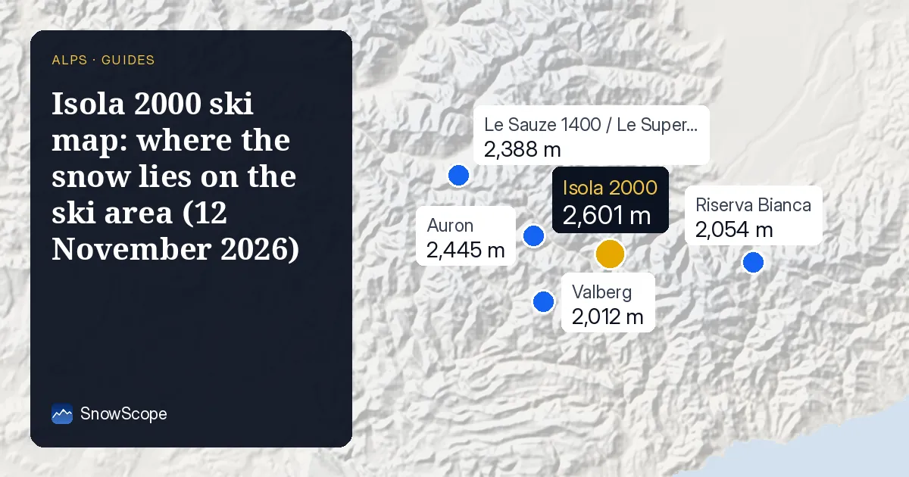
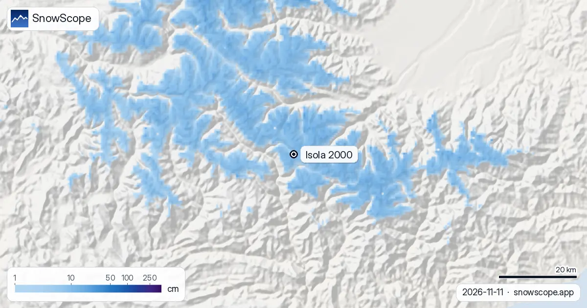
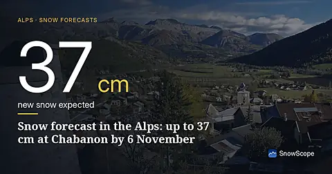

Isola 2000 ski map: where the snow lies on the ski area (12 November 2026)
Isola 2000 wears its first thin winter coat on 11 November. The snow sits at 9 cm on the high peaks at 2601 m, 7 cm at the mid-slopes around 2214 m, and just 2 cm down at the village base. The steep week ahead should add roughly 26 cm at the top, but for now it is early November snow: shallow, sun-sensitive, and shaped by the mountain's aspect.
See the live snow forecast for Isola 2000 in the SnowScope appSnow depth, powder alerts and the 3D map, free.

Three sectors, one snow map
Isola 2000 spreads across three distinct parts of the Mercantour massif. Pelevos above the resort suits learners. Saint-Sauveur to the east runs wooded and mogul-studded, favoured by confident skiers who value shelter in a thaw. Lombarde faces south and climbs towards the Italian border; it catches the sun first and softens fast in spring.
The mapped terrain spans 55 km of runs and 20 lifts between the village at 1828 m and the peak at 2601 m. These figures come from ski-trail records, not the resort's own marketing. When you open the live snow map, the coloured zones show where depth lies heaviest—the peak stays pale longer than the sunlit southern slopes.

What fell and what comes next
The last week delivered snow at every height: 19 cm at base level, 27 cm mid-mountain and 31 cm at the top. The past two days were dry. The estimates the next seven days will bring 2 cm down low, 18 cm mid-slope and 26 cm high up, with 3 cm starting within 24 hours.
These are area-wide forecasts for the region, not station readings from the resort itself. November sun and wind both whittle the cover, especially on exposed ridges and south-facing runs. The numbers assume the air stays cold enough for snow to persist; a warm spell would thin it faster.
November by the calendar
Isola 2000 typically sees its first snow on 30 October at the peak, 8 November at mid-mountain and 13 November at the base. The season is on track. The past 46 winters show first snow arrives within a few days of these dates more often than not.
A typical December builds to 14 cm at base, 23 cm mid-mountain and 43 cm at the top. February is the deep month: 35 cm, 53 cm and 95 cm respectively. The median peak of a middle winter reaches 46 cm, 68 cm and 128 cm across the three zones. Last winter (2025-26) proved generous, peaking at 51 cm, 76 cm and 140 cm.
Which slopes hold snow longest
Lombarde's sunny exposure means its snowline recedes fast in a thaw and stays lowest into spring. Saint-Sauveur, tucked in forest, keeps white patches longer and offers safer travel when the lower slopes turn slushy. The peak zone above both sectors holds the deepest and longest-lasting cover.
The best statistical week for reliable 50 cm or more at the summit is week 11, mid-March, when 83 out of 100 past winters delivered it. By then the median depth reaches 97 cm. Plan a spring trip and check the map one week ahead: Isola 2000's snow tends to arrive in pulses rather than a steady climb.
Using the map to plan your visit
Open the live Isola 2000 snow map on SnowScope and zoom to the three elevation bands. The base level often lags a week or two behind the summit, so do not judge the whole resort by the lowest figure; watch the mid-mountain and peak numbers first to see the season's true strength.
Remember that a snow depth on the map does not tell you which lifts are spinning. The resort makes those decisions independently. And after fresh snow, before you venture off the marked runs, check the latest Météo-France avalanche bulletin.
Tips for skiers
- Start by reading the top and mid-mountain depths, not the base. Early season snow arrives summit-first; the village takes time to build a skiable base.
- Lombarde sector catches sun; Saint-Sauveur keeps its cover in the trees. Pick your run based on how warm the day feels.
- Rocks and thin patches are common in November.
- The forecast adds about 26 cm at altitude over the next week, but November thaws can be quick. Aim for cold mornings and shaded slopes.
- Check the Météo-France avalanche bulletin before leaving the marked runs, especially after fresh snow on steep terrain.
About these numbers
Resort snow depths are the deepest snow on the resort's upper slopes on the date shown; they are estimates for an area, not a measurement at one point. Forecasts can change. Always read the official avalanche bulletin before going off-piste.
Official avalanche bulletins: Météo-France – Bulletin d'estimation du risque d'avalanche
Cite this report
For research, teaching or the press: the numbers and charts are free to reuse under CC BY 4.0 with this citation.
SnowScope (2026), Isola 2000 ski map: where the snow lies on the ski area (12 November 2026), https://snowscope.app/blog/en/2026/11/isola-2000-ski-map-snow-12-november-2026.html, accessed 2026-11-12
SnowScope (Atlas Labs). (2026, November 12). Isola 2000 ski map: where the snow lies on the ski area (12 November 2026). SnowScope snow reports. https://snowscope.app/blog/en/2026/11/isola-2000-ski-map-snow-12-november-2026.html
BibTeX
@misc{snowscope2026isola2000skimapsnow12nov,
author = {{SnowScope (Atlas Labs)}},
title = {Isola 2000 ski map: where the snow lies on the ski area (12 November 2026)},
year = {2026},
month = nov,
howpublished = {\url{https://snowscope.app/blog/en/2026/11/isola-2000-ski-map-snow-12-november-2026.html}},
note = {Published 2026-11-12 07:43 UTC; accessed 2026-11-12}
}· CC BY 4.0 · Methods, data and tools →
Isola 2000: snow and temperature by height, this winter vs last (tools) →
Follow Isola 2000
Free: a message when fresh snow is coming, and the forecast every morning.
More snow reports

Artesina got 44 cm of new snow in the last 72 hours. It now has about 20 cm on its upper slopes.

More snow is on the way: by 6 November our forecast gives 37 cm at Chabanon, 34 cm at Dévoluy and 33 cm at Chaillol.

Les Deux Alpes: how much fresh snow fell? 38 cm in 72 hours (15 November). Where did the most fresh snow fall in the Alps? La Grave got 41 cm of new …